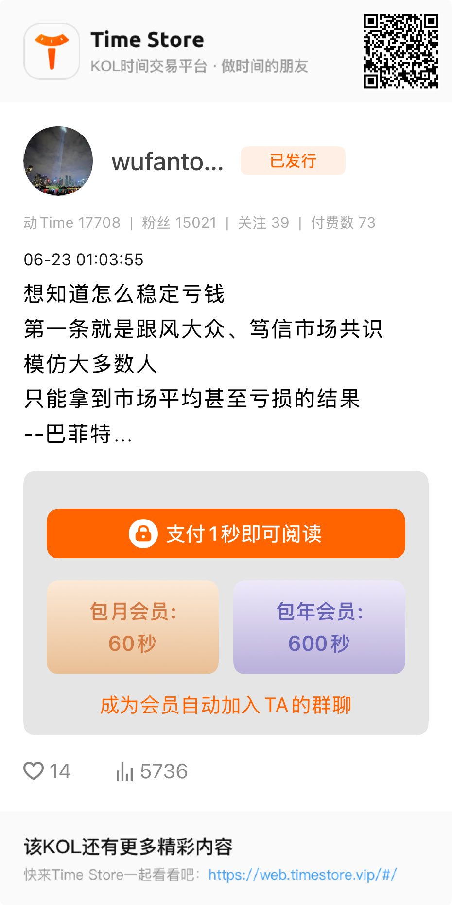

#1 · wufantouzi · 2026-06-23T18:58:12.000Z想知道怎么稳定亏钱第一条就是跟风大众、笃信市场共识人的贪婪和欲望一定会高于市场需求本身再好的东西也要有好价格https://web.tsdaq.com/#/time/pages/timeDetail/index?timeid=156436…https://web.tsdaq.com/#/time/pages/timeDetail/index?timeid=156436…
#4 · wufantouzi · 2026-07-02T16:45:01.000Z没有无缘无故的爱也没有无缘无故的恨有的人骂你也许是他某天看你的帖子自己偷偷跟了一单亏了钱又不好意思说恨是埋下了但是跟你那单是事实存在且亏了钱的有人挺你也许是他某天看你帖子偷偷跟了一单恰好赚了虽然没给你分钱但是记下你的好了所以被骂几乎都不冤枉毕竟不可能是每次都对Show more